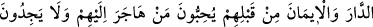

PEYGAMBER
SİZE NE VERDİYSE
ONU ALIN
7. Allah’ın, (fethedilen) ülkeler halkından Peygamberine verdiği ganîmetler,
Allah, Peygamber, yakınları, yetimler, yoksullar ve yolda kalmışlar içindir. Böylece
o mallar, içinizden yalnız zenginler arasında dolaşan bir devlet olmaz. Peygamber
size ne verdiyse onu alın, size ne yasakladıysa ondan da sakının. Allah’tan korkun.
Çünkü Allah’ın azâbı çetindir.
8. (Allah’ın verdiği bu ganîmet malları,) yurtlarından ve mallarından
uzaklaştırılmış olan, Allah’tan bir lütuf ve rızâ dileyen, Allah’ın dinine ve
Peygamberine yardım eden fakir muhâcirlerindir. İşte doğru olanlar bunlardır.
9. Daha önceden Medine’yi yurt edinmiş ve gönüllerine îmânı yerleştirmiş olan
kimseler, kendilerine göç edip gelenleri severler ve onlara verilenlerden dolayı
içlerinde bir rahatsızlık hissetmezler. Kendileri zaruret içinde bulunsalar bile onları
kendilerine tercih ederler. Kim nefsinin cimriliğinden korunursa, işte onlar
kurtuluşa erenlerdir.
10. Bunların arkasından gelenler şöyle derler: Rabbimiz! Bizi ve bizden önce